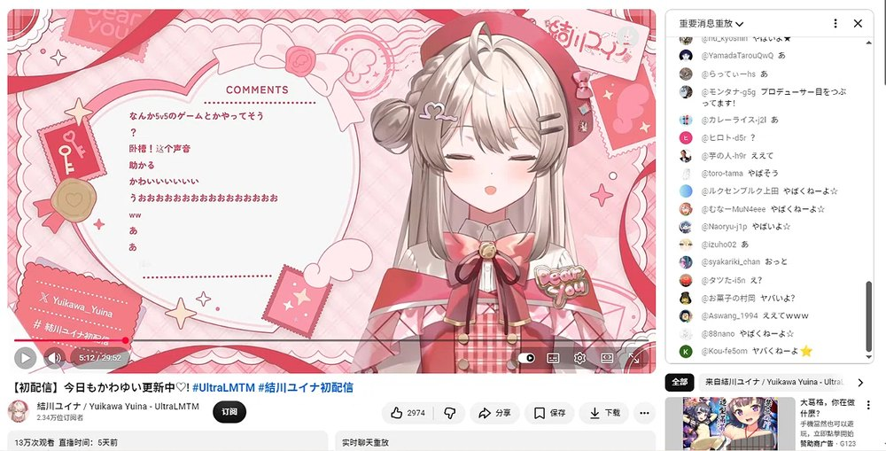

本文只做事实梳理与现象分析，不站队、不判决。对当事人不做道德评价。 事件仍在发展中（截至 2026 年 10 月 12 日），部分关键信息只有单一来源，文中会逐条标注性质。 涉及多方商业纠纷的内容，本文只转述公开报道中的说法，并明确标注其为单方面指称，不作事实认定。
免责声明
一、部分信息来自第三方与个人口述。本文涉及的部分内容，来自第三方公司（公会、运营方）及其相关人员、以及其他当事主播的公开直播、口述与转述。这些内容未经独立核实，本文对其真实性不作任何认可，也不将其作为事实陈述使用。
二、信息来源分散且不稳定。相关材料的原始载体分布在多个平台——X（推特）、Instagram、YouTube、bilibili，且部分内容已被删除、设为不可见、仅对特定人开放，或只以截图和二手整理的形式留存。本文只能依据可获取的公开转载与截图进行梳理，无法排除因删改造成的偏差。
三、同一事件可能存在多个互相矛盾的版本。由于上述原因，本文会同时呈现不同来源的说法（包括彼此冲突的说法），并不作事实认定，也不代表认同其中任何一方。
四、对第三方的描述均为转述。文中涉及任何个人或机构的部分，均属「某人说过某话」的转述，不构成对任何个人或机构的事实指控、评价或定性。
五、更正与删除。若任何权利人认为本文内容侵犯其合法权益，可通过站点页面提供的联系方式提出，本文将在核实后及时更正或删除。
本文持续更新中
这件事从 10 月 5 日首配信到现在仍在快速变化——当事人的立场、平台的处理方式、行业内部的说法，都会陆续出现新版本。本文会随时补充与订正，并把「已证实」与「只有单一来源」的内容分开标注（见第七节）。
最后更新：2026-10-12
更新记录
2026-10-13 作者附记扩写（约一千字）：新增「五个月，还是一年」（黑桃影与塔菲的一年之差）、「我不会说中文」、「五个月，完全康复」、「一笔 2021 年的旧账」四节；插入图 7（蜜桃乌龙茶拟人）与片尾音乐《白菜对我笑》（网易云外链播放器）；正文立场声明与可信度标注不因此改动
2026-10-12（二次） 文末新增作者附记「四十九块，和八个 G」：作者本人的消费明细（SC 与域名）、8 GB 存档付出的代价与毕业当天「没有哭」的重新解释。正文的立场声明与可信度标注不因此改动
2026-10-12 新增第十一节「事发现场的横断面」：以毕业通告评论区 10 月 6—12 日的留言流为样本，记录一段被实时终止的悼念仪式、评论区黑话、「报复性消费」效应与时空警察现象；可信度表补入「新账号 7 月已注册」类说法
2026-10-11（三次） 补入初配信第 5 分 12 秒的首条中文识别留言（图 6），并区分「身份被认出的速度」与「国区观众涌入的速度」
2026-10-11（二次） 新增第七节「一个活的样本」：记录 10 月 9—10 日出现的「多次转生计划」指控，并标出其来源性质、传播中的自我变形与同帖反证
2026-10-11 补充「首播屏蔽中文发言」「X 账号拉黑」两条实证；订正此前对两张截图的误读；新增 UltraLMTM 招募时间线与公会方说法一节；可信度分层表扩充
2026-10-08 初版发布
一、一条被广泛证实的消息
2026 年 10 月 7 日，中文互联网开始流传一个说法：B 站头部日V 虚拟主播真白花音（粉丝名「帕清姬」，216 万粉）在宣布「永久毕业」五个月后，以新身份重新开始活动。
新身份是結川ユイナ（Yuikawa Yuina），2026 年 10 月 5 日 19:00（日本时间）在 YouTube 完成初配信，隶属 VTuber 品牌 UltraLMTM——由 GANYMEDE（ZETA DIVISION 母公司）运营、k4sen 担任制作人。
事件的争议点，用三句话就能概括：
- 2026 年 4 月 30 日，她在毕业直播里以一张毕业证书的形式，向两万名观众告别；
- 5 月 1 日起，真白花音账号「永久停止全部活动」；
- 158 天后，同一个声音出现在另一个平台的另一个账号里。
而接下来四天发生的事，把这场争议的性质整个改变了——这才是本文真正要处理的东西。
二、时间线：一个被漏掉的关键日期
把关键节点按时间排开：
- 2019-05-01 真白花音出道，隶属个人势企划「ちゅこらら」
- 2019-10-24 在推特宣告将于月末引退
- 2020-12-01 宣告「复活」，随后加入 P 家
- 2026-01-24 举办五周年纪念 3D 演唱会，此时仍在正常活动
- 2026-04-17 宣布因身体与心理问题、医嘱要求长期休养，将于 5 月 1 日起永久停止活动
- 2026-04-30 毕业直播，2 万观众在场，最后展示毕业证书，达成「千人舰队」成就
- 2026-05-02 将早期自我介绍、回归声明、部分 vlog 与直播回放设为「仅自己可见」
- 2026-09-28 UltraLMTM 公开一期生名单，結川ユイナ在列
- 2026-10-05 結川ユイナ初配信——开播 5 分 12 秒后，留言区出现第一条中文识别
- 2026-10-07 社区扒出身份。国内媒体开始集中跟进
- 2026-10-08 第二次直播，开始大规模屏蔽中文发言
- 2026-10-09 切片账号「绯吧official」开直播澄清
- 2026-10-10 国内媒体报道中演变为三方混战
那个被漏掉的日期
很多人注意到「毕业才五个月就转生」，但很少有人去查一件事：結川ユイナ 所在的这个企划，本身是什么时候开始招募的？
UltraLMTM 这个品牌在 2025 年 9 月 27 日的东京电展（TGS 2025）上首次公布，同日同时开启第一期生招募。招募窗口是 2025 年 9 月 27 日至 10 月 31 日。
这个日期距她宣布毕业（2026 年 4 月 17 日）有近七个月，距毕业直播（4 月 30 日）有六个月。
这条时间线的意义在于：它把社区里流传的「2025 年 10 月就开始找下家、2026 年 1 月面试通过」这类说法，从「网传截图」升级成了可以在品牌官网和媒体报道里核对的时间戳。
需要谨慎的是：招募窗口开放不等于报名者一定是她，也不等于她在窗口期就通过了。但它至少排除了「临时起意」这个可能性——如果她是 2026 年 4 月之后才想到要转生，就不需要去参加一个半年前已经结束的招募。
这一条是全篇唯一一个双方都无法否认的硬证据。
关键点还在于：这不是她人生中第一次「转生」。 2019 年宣布引退、2020 年复活，是同一个账号上的同一次转生。所以「VTuber 转生」这件事在这个圈子里，本身是有先例、有共识基础的。
真正没有先例的部分，是告别的规格。
三、「不会转生」这句话是谁说的
社区里流传最广的控诉是那著名的「三不」——不会复活、不会转生、不要期待。
但这里必须做一次拆分。
根据可查到的公告原文，措辞是这样的：
因此决定自 2026 年 5 月 1 日起，永久停止【真白花音】账号的全部活动。
请注意这句话的边界：它限定的是「【真白花音】账号」，不是「这个人不再从事 VT 活动」。而在 B 站的评论区内，有相当一部分老粉在毕业时就已经在纠正这一点——他们说，那句「不会转生」多半来自切片账号的标题与运营话术，并不是她本人的原话。
但这个说法现在也需要修正。后续的多篇报道里提到，她在毕业直播当晚明确否认了未来复活的可能。也就是说：
- 公告文本层面，她承诺的是「停止这个账号」
- 直播口头层面，她把话说到了「不会回来」
这两个层级不一致。而听众记住的通常是后者。
所以在事实层面能确定的是：
- 她本人确实表达过「不会复活」的意向，这一点已经不再只是切片话术
- 但她从未在文本上承诺「永不以任何身份复出」
- 这个空白，后来被整个社区用最严格的读法填满了
而这仍然不减轻伤害——因为伤害主要不来自这句话本身。
四、真正的转折：首播的「装失忆」
如果这件事只到「转生」为止，它仍然是一场关于承诺的讨论。
10 月 5 日首播开始，性质就变了。
据多方报道与直播切片：
- 首播直播间同时在线上千人，其中中国 IP 占相当比例，弹幕被中文刷屏
- 面对满屏中文，这位「新人 VTuber」表示自己看不懂汉字、不会读中文
- 有观众发现，她念某些字时似乎下意识读出了中文发音
- 随着中文弹幕增多，她逐渐只回应少数日语弹幕
- 到直播后段，中文评论被屏蔽
到了 10 月 8 日的第二次直播，处理方式进一步升级：只要发任何一句中文，房管立刻封禁，包括付费赠送的 SC 也一样。
但要说清楚的是：屏蔽并不只发生在直播间里，也不只发生在 YouTube 上。
下面这两张截图是 X（推特） 的界面，不是直播画面：
也就是说，中文用户在一句中文回复之后，拿到的是两个平台上的同一套处理：
| 平台 | 处理方式 | 性质 |
|---|---|---|
| YouTube 直播间 | 房管封禁中文发言（含付费 SC） | 房间层面的秩序管理 |
| X（推特） | 账号拉黑，无法互动 / 关注 / 私信 | 账号所有者层面的关系拒绝 |
两张截图里这种差别值得细看：
- 直播间封禁，通常还能换个方式说上话——它更像是「房管在维持秩序」，责任可以被推给规则
- 而 X 上的拉黑是账号本人（或代运营者）点下去的动作：它明确表示「我不想再和你有任何交互」
这也是为什么很多人收到的不是愤怒，而是那种说不上来的错愕——
因为对中文观众来说，他们想说的话其实只有一句：「你是不是白菜？」
账号给出的回答是：「你不能问。」
社区里那句被反复引用的话，在这里获得了它的完整含义：「怎么，帕清姬，面对这梦寐以求的重逢，连话都说不出来了？」
另外，主页上还有一个细节值得记录：置顶帖把所有对外标签都配齐了——全 TAG、STREAM TAG、FANART TAG，以及一个全新的粉丝名；简介里还标注了角色的画师与建模师（「妈妈」「爸爸」两处署名）。
这是一套完整、独立、从零开始的新身份。它必须准备新的粉丝名，因为旧的粉丝名不能再用了。
社区的调侃是：「中文语音包是卸载了，但好像没卸载干净，还留着点残余。」
这里必须做一次公正的拆分
关于这件事，社区里有两种说法，而且两种都有各自的道理。
第一种：新角色不认识中文是正常角色演出。
結川ユイナ是一个全新的虚拟角色，有全新的人设。在企划设定的框架里，「这位魔法使见习生不识字」是完全合理的角色行为。原企划同期出道的另外五位一期生，全都是各自全新的角色。
从纯运营角度看，切割身份、避免老粉绑架新企划，是 VTuber 行业的标准操作。大量头部主播转生时都会刻意淡化与前身的关联，这一点上她并没有做什么特别反常的事。
所以真正的问题从来不是「新人设不认识中文」——那是行业惯例，无可指摘。
真正的问题是：一个需要全新粉丝名的账号，面对的却是一群带着旧粉丝牌的人。 这两拨人被迫在同一个直播间里相遇，而运营给出的处理方式，是封掉其中一方。
第二种：但屏蔽付费中文发言，无法用角色设定解释。
这是关键的分界线。
- 「不识字」是角色设定，可以辩护
- 「不回应中文提问」是可以理解的角色行为
- 但「封禁一切中文发言，包括花了钱的」不是角色行为，这是运营行为
角色可以在设定里失忆。运营不能在设定里屏蔽付费用户。
而这一步有一个特别刺眼的细节：真白花音在 B 站时期的商业模式，核心就是「对着中文弹幕学中文」这件事本身。她是靠这个内容品类积累起 216 万粉丝的，而这些观众是订阅者、舰长、付费用户。
也就是说，新账号正在执行一套与它在中文市场的全部商业基础直接冲突的运营策略。
而这恰恰也是评论区里粉丝情绪最激烈的原因之一：这些人既是「背叛者」，也是「被背叛者」。 他们既是来质问的，也是来支持消费的。
这批截图里最容易被忽略的一张——它不是转生之后拍的。
这张图里的每一个元素，都在为「为什么后来那一下会这么疼」提供注脚：
- 右上角是 2 万以上的实时在线
- 弹幕发送者几乎都带着「帕清姬」粉丝牌（牌级从 1 级到 38 级不等）
- 弹幕内容几乎全是中文：「想看最初的皮套了」「最早的皮肤」「请用日文说现在你是什么心情」「娃娃菜可爱」
- 右下角还挂着「虚拟杂谈 · 第 1 名」的栏目标签
请注意这些弹幕在说什么。他们要的是「最初的皮套」「最早的皮肤」——在告别的时候，他们想再看一眼最开始的样子。
这是一期一会式告别里最典型的情感：我要记住你最初的模样。
而五个月后，同一批带着粉丝牌、打字习惯一模一样的人，出现在新的直播间里。
他们收到的回复是：屏蔽。
这才是整件事真正的时间结构——不是「她转生了」，而是「那间直播间里的 2 万人，后来被逐出了这个名字的继承关系」。
那张毕业证书上写的是「见证人：全体帕清姬」。
顺便把「158 天」再压一次
最后回到首配信本身。有观众截下了开播第 5 分 12 秒的留言回放：

这条截图把刚才那个「158 天」的数字又压了一次：
- 从毕业直播到她重新开播：158 天
- 从她开播到被认出来：5 分 12 秒
但真正值得看的不是那 5 分钟，而是这张图里没被注意到的部分：
那一刻的留言区，绝大多数还是日文——「かわいいいいい」「助かる」「うおおおおお」，右侧的精选留言（重要消息重放）更是清一色日文。中文只有一条，孤零零插在中间。
也就是说，「直播间被中国粉丝堵成国区专场」描述的是后来的状态，不是开场的样子。
身份被认出的速度，和国区观众涌入的速度，是两条完全不同的曲线。前者是 5 分钟，后者用了好几天。
而现在回过头看，那 5 分钟里发出的那条中文，其实是整件事里唯一一句没有立场的话——它既不是质问，也不是怀念，只是一个被声音击中的人脱口而出的一句「卧槽」。
后面发生的一切，都建立在这条留言被证实之上。
现在是 10 月。
五、被忽略的第三方：切片生态的位置
事件发酵过程中，社区里出现了一句被转发了很多次的话，大意是：「现在最可怜的人就是绯吧。」
绯吧（「绯吧official」）是中文互联网上最大的真白花音切片账号之一。萌娘百科词条里有一条记载得很直接：由于在制作切片时大量使用「日本萝莉」这一关键词，账号在短时间内获得了巨大的流量，随后其他切片账号纷纷效仿——真白花音也因此成为 B 站约定俗成的「日本萝莉」这个标签的代表。
这意味着一个结构性的事实：
真白花音 216 万粉丝里，有相当大一部分是切片喂养出来的。这批人关注的是「日本萝莉」这个内容品类，而不是这个具体的人。
争议升级后，绯吧发生了什么
10 月 9 日晚，绯吧official 开直播回应。整场两个多小时，唯一涉及钱的回应是展示了这个账号六年来做切片获得的收益——七千多元。
而几项被粉丝关心的问题，直播里没有回应：这六年和白菜的关系如何演变、毕业与转生的事是否知情、自己与这位主播是否有过直接联系。
顺带一提，这个回应方式本身也引发了大量不满。有评论追问：「原来绯吧连白菜的联系都没有吗？」——这确认了一件此前只是猜测的事：这个号为真白花音贡献了大量流量的人，与她之间没有私人联系方式。
（说明：网上流传的「大学时期开始自费做切片、月生活费 1800 元、六年没接过商单、切片播放超过一亿」等具体数字，均出自网友爆料，没有可核实的公开材料，本文只作为「传闻存在过」记录，不作为事实引用。）
这才是那句「最可怜」的实质
在舆论结构上，绯吧是唯一一个在这次事件里既没有做错任何事、也没有任何立场的人。
- 他没有违约
- 他没有消费谁的信任
- 他没有拿过一分钱不属于他的钱——六年，七千多
- 他只是把自己全部的时间押注在了一个人格上
而那个人格单方面宣布终止了关系。他甚至没有渠道提前知道。
如果说社区对「转生」这件事本身有分歧，那么「最可怜」这个说法的一致性要高得多。因为利益受损最直接、且从头到尾没有话语权的人，只有一个。
六、舆论结构的突变：从两个人的事，变成三方混战
10 月 7 日晚，一个意外的角色入场了。
乐府——国内一家虚拟主播公会的负责人——开启直播，公开谈论真白花音的毕业与转生。随后几天，国内媒体对其说法做了长篇整理转载。
需要非常明确地说明的是：这些内容全部是乐府一方的单方面说辞，转述方自己在文首就标注了这一点。 它们包括（且仅包括对方公开说过的内容）：
- 真白花音 2025 年 9 月因收益断流主动联系公会商讨转生去向
- 2026 年 1 月锁定退场排期与新签约机构，比公开宣布早三到四个月
- 毕业直播单场流水约 60 万元，「若非利用绝版情绪刺激打赏，常规收益至少缩水一半」
- 期间存在与字幕组的谈判破裂、合同乌龙等纠纷
- 最终日本合作方收回了「真白花音」的形象 IP
关于「字幕组私吞收益」的部分，属于未经独立核实的商业指控。本文不将其作为事实陈述，也不作任何判断。
但即便把以上全部当作待验证的声称，有一件事仍然值得注意——这类内容的存在本身，改变了这事件的舆论力学。
原本的舆论结构很简单：粉丝 vs 主播。情感明确，道德清晰。
当一个掌握行业内幕的第三方入场，并且它的说法与粉丝的愤怒部分吻合（都指向「存在隐瞒」），但利益位置完全不同时，事情就变了：
粉丝的愤怒是被背叛感——我要的是一个交代 乐府的愤怒是被背刺感——我垫了资源，人却走了
这两种愤怒可以互相印证，但不能互相替代。
而当一个更有行业话语权的人开始提供「内幕」时，社区里出现了一个很典型的现象：一部分人开始转向攻击这个第三方，而不是继续追问当事人。
这在舆论研究里叫议题漂移。它有一个很实际的后果——追责的焦点从「谁欠我一个解释」变成了「谁最可恶」，而后者永远无法结案。
客观说一句对各方都成立的话：在这件事里没有任何一方是干净的。 主播有表达上的算计，公会与字幕组之间有长期积累的纠纷，转生本身是她的自由。
如果一定要排个优先级：被损害最深、且从头到尾没有发言权的那个群体，排在所有互相指责的群体之前。
七、信息可信度分层
这类事件里最容易出问题的地方，就是把「合理推测」当「已确认事实」传播。目前流通的说法，性质如下：
| 说法 | 传播广度 | 可信度 |
|---|---|---|
| 毕业时间、毕业直播、删除视频 | 极高 | 有公告与实际页面为证 |
| 新账号与初配信时间 | 极高 | 频道与推特均可查 |
| 首播/二次直播屏蔽中文 | 极高 | 多家媒体与切片一致 |
| X 上拉黑中文用户 | 高 | 截图实证（时间线 + 主页双重提示） |
| UltraLMTM 招募期 2025-09-27 起 | 中 | 可公开核对（品牌官网与媒体报道） |
| 「三不」仅为切片话术 | 中 | 已被部分推翻，直播中确有口头表态 |
| 60 万流水、2025-09 接触下家 | 中 | 单一来源（公会方直播） |
| 日方收回形象 IP | 中 | 单一来源（公会方直播） |
| 字幕组私吞收益 | 中 | 未经核实的商业指控 |
| 切片人六年收入 1800/月等 | 中 | 网友爆料，无可核实材料 |
| 东雪莲直播口述的「多次转生计划」 | 中 | 有署名来源，但为利益相关方，且仅二手转述 |
| 「皮套花了两万多」等具体金额 | 中 | 传播中已被同帖用户纠正 |
| 「只拉黑跳脸者，普通中文评论有点赞」 | 中 | 同帖反证，与媒体口径冲突 |
| 「新账号 7 月已注册」「推特 7 月已有活动」 | 中 | 网友评论爆料，无实锤；与招募期硬证据方向一致，但不构成独立证据 |
| 各种对个人动机的归因 | 极高 | 纯推测 |
需要特别说明的，是乐府的说法为什么值得单独列一行。
它既不是空穴来风——大量细节具体到月份、金额、机构名，可查证性远高于普通爆料；也不能当作事实使用——因为来源是利益相关方本人，且他在这个事件里同样有立场。
一个更稳妥的读法是：把这些内容当作「存在这条线索」来记录，而不是「这条线已经成立」。
顺带说一句：目前中文社区里传播最广的「公会欠薪」类说法，全部是匿名爆料，没有实锤材料。在没有可靠信源之前，把它当作解释框架使用，等于是在给一个未验证的因果链加固。
一个活的样本：10 月 9—10 日出现的「多次转生计划」指控
就在本文上一版发布后，X 和贴吧上又出现了一批新指控。它值得单独拿出来讲，因为它是这张表格的活体演示。
指控的大意是：这次毕业并不是孤例，而是一个重复过多次的模式。流传的版本把她的活动史整理成一条链：
结 → Holo 二期生出道计划（说经阿夸介绍，形象已做好，临门反悔，阿夸因此与她不和，此后她被 Holo 拒之门外）→ 真白花音 → 结 → 真白花音（靠切片走红后复活）→ 萌鸽出道计划（说形象已做好，因切片账号把她切火了而放弃）→ 结川ユイナ
如果这条链成立，那么 2026 年的「告别—转生」就不再是一次失信，而是同一套操作的最新一次迭代——整件事的性质会完全不同。
问题在于它目前站不住。
- 来源是利益相关方。这套说法最早的出处是另一位虚拟主播（东雪莲）在直播中的口述，再由贴吧用户整理、X 用户转帖。转述者自己就是当事人之一，且自称在这类事件中「里外不是人」。她本人在中文社区也长期存在大量争议记录。
- 全是二手转述。没有书面材料、没有合同、没有时间戳，涉及的是 2021 年前后的旧事。
- 它在传播中已经变形了。X 上的原始说法是「皮套花了两万多」「找的是赤井心的画师」，随后就被同帖用户纠正为「其实是给乐府方面准备的」「两万说多了，只出了草稿、没细化没绑定，几千块是有的」；而贴吧整理的版本又把 Holo 与萌鸽说成两件互不相干的事。
也就是说：同一个故事，在一天之内至少出现了三个版本——而这三个版本都被当作「内幕」转发过。
更有意思的是，同一批讨论里还出现了一条与前面完全相反的说法：
「她拉黑删除的都是直接跳脸说她是真白花音的人」「现在只要你不提她前世，基本不会拉黑，还给中文评论点赞了」
这条如果成立，就意味着「无差别屏蔽中文」并不准确——被处理的可能只是当面挑明身份的那批人。
所以这一段不需要任何结论，它本身就是结论：这张表格最底下那一行（「对个人动机的归因」，纯推测），在真实传播里会伪装成第二行甚至第一行出现。 识别它的方法不是看它讲得多具体、多像内幕，而是看它能不能说清是谁、在什么场合、以什么身份说的。
最后补一个可观察的事实：截至 10 月 11 日，B 站上已经出现以「結川ユイナ」为标题的切片（其中一条发布两天左右、播放约 1.8 万）。也就是说，「与中文市场切割」这个动作在内容层面并没有成立——需求还在，只是承接的人换了。
八、VTuber 的「转生」为什么本不该是新闻
把视角拉远一点，这件事处在一个非常成熟的行业惯例里。
在虚拟主播生态中，角色与中之人是分离的。角色是一个 IP，可以有名字、有生日、有性格、有形象设定；中之人是一个真实的人，负责表演与运营。围绕这套结构，行业里形成了几条被广泛接受的惯例：
- 毕业（引退）：停止这个账号的活动
- 转生：换一个账号重新开始，用新的角色身份
- 毕业不等于退圈，只等于「这个角色不再活动」
- 只要不同时使用两个身份运营同一份粉丝关系，转生是合规且常见的
真白花音自己 2020 年就做过一次。所以从行业逻辑上说，她这次的操作完全在规则之内。
社区里有一条被反复引用的评论，我觉得是整件事里最清醒的一句话：
现在的虚拟主播，感觉快像是方便逃避责任的工具和幌子了。
这句话里藏着一个真实的行业矛盾：规则允许转生，但观众的心理契约不允许。 平台和公司按「账号」计算，情感按「人」计算，两边的口径从来就没对齐过。
也就是说，争议的真实结构不是「她该不该转生」，而是：
当「角色可以被回收」成为行业惯例，而「人」被当成角色的一部分来承诺时，谁来为这个口径差买单？
九、几种立场，逐一拆开
第一种：支持转生，认为这很正常。 论据是行业惯例 + 她的账号所有权 + 旧公告措辞本来就限定了账号 + 她的身体状况可能是真的。这个立场最稳，但它有一个盲区：它把「她有权这么做」和「这件事没有伤害任何人」当成了同一件事。
第二种：认为构成背信。 论据是三句话式的告别强度、删视频的行为、以及「赛博葬礼」的仪式感。这个立场情绪上最能被理解，但它的强度依赖一个前提：她知道自己在做什么。
第三种：认为「没做错什么」。 论据是打赏是自愿的、关注是自愿的、虚拟内容本来就是演出。这条立场在法律和逻辑上都很稳，但它低估了一件事：观众投入的不只是钱，还有时间与情感。把这两者都算作「自愿」来完成道德清算，本身也是一种粗暴。
第四种：把火力对准切片账号。 切片账号的「日本萝莉」标签确实带流量，但那是内容策略，不是欺诈。
第五种：把火力对准公会和字幕组。 这一派认为行业内部早有积怨，主播是被更黑的手推着走的。这个视角能解释一部分问题——它确实能解释为什么转生会这么快——但它同时也是最容易被利用的一种叙事，因为施害者的形象一旦被塑造出来，追问的成本就消失了。
第六种，也是我认为最接近问题核心的：把「被背叛感」当作主要情绪来处理。
下面单独展开。
十、我们真正在愤怒什么
如果把评论区里上千条发言做一次归纳，会发现愤怒的对象很少是「转生」这个行为本身。
排在前面的表述，几乎都在说同一件事：信息不对称。
一位观众的追问写得最完整：
他们的生气点不在于她转不转生，在于停播之前疯狂地渲染——不转生、不复活、不要期待。然后这个时候回头你告诉我说这是文字游戏。她又没说不在外网转生。而且最后直播的那三天疯狂渲染氛围，那三天的应收快顶上大半年了。
这段话里有三个层次的委屈：
- 被剥夺了知情权：作为观众，你被引导相信了一个结论，而结论的制定者持有一个不同的结论
- 被当成资源：那三天的告别本身就是一场高密度的打赏收割，而「永久」这个措辞为它提供了道德正当性
- 被剥夺了哀悼权：即使粉丝提前知道，她也可以正常告别。问题不在于她要走，而在于她要你以为自己再也见不到她
第 3 点是很多人忽略的。真正的伤害不是「她回来了」，而是「你被迫经历了一次没有告别的告别」。
这在心理学上有对应的机制。心理学里管这种「被剥夺预期」的现象叫做预期违背，而它的伤害强度和违背幅度、以及「违背者是否知情」高度相关。
而 10 月 8 日屏蔽中文发言这一步，把这件事的性质又推了一层：
- 转生伤害的是「过去的粉丝」
- 屏蔽中文伤害的是「现在的付费用户」
两拨人原本可以互相理解——老粉知道她换了身份，新用户不认识她，各取所需。但屏蔽付费中文发言这一下，把两个群体强行推到了对立面：
- 老粉觉得被切割
- 中文用户觉得自己是被拒之门外的消费者
这是整个事件里唯一一个「怎么做都可以说是错的」位置。 而这类位置，往往才是真正引爆的地方。
至于社区里那句「她明明可以说展开新的人生冒险，大家都懂什么意思，但就是要骗你生病了」——它的尖锐之处也在这里。在「把话说死」和「坦白」之间，她选了前者。 而这个选择的收益是可计算的。
十一、事发现场的横断面：毕业通告评论区的一百五十天
前面几节处理的是「发生了什么」。这一节换一个问法：这件事在它最主要的事发现场——那条毕业通告的评论区——长成了什么样子。
这份样本有个特殊性质：它「停更」于五月，却在十月被重新激活。毕业通告发布于 4 月 17 日，此后的五个多月里，这里一直是个安静的悼念区；10 月 6 日之后，它变成了整个事件最密集的舆论现场。翻最新一条留言可以一直翻到发稿当天——一个宣布「永久停止活动」五个月的账号，评论区每一天都在产出新内容。
这份留言流里同时存在几种完全不同的姿态，逐个看。
一场被新闻实时终止的悼念仪式
样本里最值得记录的，是一个长达五个月的个人仪式。
有一位用户从五月起，每天晚上在同一位置打卡：「白菜晚上好，今天是你离开后的第 N 天，是想念你的第 N 天……」一天一条，风雨无阻。样本里留下的最早一条是「第一百三十四天」（9 月 11 日），最晚一条是「第一百五十八天」——照此推算，这个仪式从五月就开始了。
10 月 5 日，他照常发了第一百五十八条。
下面出现的回复只有一句：「就发到今天到此为止吧，人家已经转生了不会再回来了。」
他的回答是：「嗯，我也在考虑要不要结束。」
10 月 5 日 19 点，正是結川ユイナ初配信开播的时刻。也就是说，当他写下「第一百五十八天」的时候，那个让他打卡的理由，很可能已经在几个小时前回到了直播间。而本文开头写的那个数字——「158 天后，同一个声音出现在另一个账号里」——与他计数器上的数字，是同一个数字。
一个与事件毫无利益关联的普通观众，用五个月的日常打卡，独立记录了与本文开头完全相同的距离。
这段对话值得单独记下来，因为它展示了共同体创伤里最安静的一种损失：热闹的舆论（爆料、玩梗、清算）终会散场，而最先消失的往往不是热点，是某个人每天重复的小仪式。 舆论有下一站，打卡没有。
屏蔽词与黑话：共同语言的残骸
评论区里流通着一批局外人看不懂的词：「48」「数字植物」「菜八分」「撒西不理」「赛博神医」「秽土转生」「长期休养说是」。
其中一部分有实用功能——在新直播间，直接写「白菜」会被处理，于是要用数字与代称规避。甚至有用户整理出了「屏蔽检测教程」：多开一个小号，观察自己发的弹幕是否只有自己可见；并称直播间的处理已经激进到「把中文杀绝种了，不管中日英文」（单一用户观察，未经核实）。
另一部分则是纯文化性的：在 B 站的通告评论区里，没有人会因为你写「白菜」而封你，但大家仍然在用「48」，用「数字植物」。这是共同语言的残骸——就像分手之后仍然改不掉的称呼。
一条长文，和它收到的二十几个字
10 月 8 日，一位自称从 2025 年 5 月起默默看直播的帕清姬，在评论区发出一篇长文：逐条反驳「圈钱跑路」的叙事，主张她直播里只说过「不会复活、不要期待」、没说过绝不转生，强调毕业期间的打赏从来不是她主动要求的，最后呼吁「多一点理性，少一点争吵」。
这是整份样本里最长、最完整的一份辩护状。
它收到的回复有二十多条，出现频率最高的内容，是同一个字外加一个句号。
不必去考据那个字的确切含义——重要的是这个结构：一份上千字的辩护，在回声上输给了两个字符。 不是论点被驳倒了，而是在这个场合，辩护本身已经不属于被接受的文体。
样本里还留着另一种更沉默的立场：同一位用户在同一层楼反复留言「求你了宝宝快回来吧好不好啊，哪怕几率只有 0.00.1% 我也会等」，重复了六次以上。有人只回了四个字：「真卑微啊」。
哀悼与玩梗共用同一条评论区，且互不理解。
一首打油诗，和被通货膨胀解构的梗
样本里传播很广的一条是一首打油诗：
烟笼寒水月笼沙，白菜蜜桃乌龙茶。 清姬不知舰长狠，菜八分钱干飞马！
它把《泊秦淮》改成了这件事的注脚。但更值得注意的反而是这条回复：「饮料给的太多会导致发饮料瓶这个行为本身的嘲讽力度也被解构，不是啥大人物没必要。」
连嘲讽本身都出现了通货膨胀，并且有用户对此进行纠偏。 一个梗从诞生、被滥用、到被社区内部批评，只用了三天。
流动的钱：报复性消费效应
还有一批留言在讨论钱，而且方向出人意料。
有用户观察到，事件发酵的这两天，某位日本主播「两天涨了 31 舰到了 55 舰，直播三年也才 24 舰」；另一位长期在 B 站播出的日V，舰挂数从三千八百多直接顶到九千九百九十九加。评论区给这个现象起了名字——「报复性消费效应」：从被辜负的关系里撤出来的钱没有消失，只是在寻找下一个值得信任的对象。
样本里甚至出现了多次方向各异的「迁移建议」：有人推荐去看那位被称作「传奇耐播王」的主播，有人写「给白菜花钱，不如花 30 块钱让永雏塔菲唱生日快乐歌」，还有人干脆把别家的应援句式直接搬进了这片废墟。
至于钱为什么流动，评论区在几天内自发产出了至少三套彼此矛盾的经济学解释：日元贬值说、日本制作成本十倍说、欠公司债务说。三套解释互不相容，却共享同一个前提——她是理性经济人。
其中「最后一场圈了 60 万」的说法与第七节里公会方的「60 万流水」在数字上完全吻合。但要注意：它在评论区的流传形态是「听说」——同一来源以传闻形式完成了跨平台自我复制，看起来像独立佐证，其实不是。
时空警察
最后是这个现象本身：样本里反复出现「我猜你点了按时间排序」「时空警察会见证一切」「年年考年年错」。
「按时间排序」是整份样本里出现频率最高的句式。它的意思是：这条五个月前的通告下面，新留言比正文重要——时间轴取代了正文，成为事件的实时记录。而「时空警察」（考证历史发言以对照当下）的存在说明，这个社区自发承担了存档职能：谁在四月说过什么、谁在十月被打脸，都有人负责记得。
哀悼、辩护、玩梗、算钱、存档——五种姿态挤在同一条评论区里，没有统一剧本。这就是共同体创伤的现场形态：不是所有人一起哭，而是所有人各自处理。
十二、结语：三个层次的问题
如果要给整件事留一句结论，那大概是：这不是一次撒谎，这是一次精确的、没有恶意的、但收益明确的表达选择。
它的措辞在逻辑上无懈可击，它的转生在行业规则内成立，它的身体状况也无从证伪。
但它同时也是一个懂得「告别规格会决定观众情绪状态」的人。它用规格当了工具。
而真正把这套工具砸碎的，是后来的运营动作。角色可以失忆，运营不能屏蔽付费用户——这条线一旦越过去，前面那些「角色行为」的辩护就全部失效了。
对粉丝来说，这不构成愤怒的理由，也不构成原谅的理由。它只构成一件很具体的事：下次再有人告诉你「我永远不会离开这个行业」的时候，你可以选择先打个问号。
这不是针对某个人。这是这件事真正想教给所有人的东西。
最后说一件被彻底忽略的事。
有粉丝在真白花音宣布毕业时自发搭了一个纪念网站。按原计划，这个网站将在 10 月 14 日关闭，目前只剩一个分站在运营。
而在舆论最沸腾的这些天里，没有人在意它。
那位为真白花音贡献了大量流量、六年只拿到七千多元、与她连联系方式都没有的切片账号运营者——他在 10 月 9 日开了直播，观众在讨论他的收入数字有没有夸大。
在所有人都忙着找「谁欠谁一个交代」的时候，那个被彻底拿走的形象、那个被做成标本的记忆、那个已经关掉倒计时的纪念网站——
没有人问一句：它到底是谁的？
附记：四十九块，和八个 G
正文到这里就写完了。按惯例应该收束、克制、不站队——前面十一节也确实做到了。
但接下来这段话不是分析，也不打算做到。
先说钱
这篇文章的作者，前前后后为真白花音花过 49 块钱。
30 块，是一条 SC。
19 块，是一个域名——「真白花音.top」。
事件之后，域名忍痛转让，收回来 15 块。而那条 30 块的 SC，就真的只是 30 块的 SC。
这 49 块与其说是打赏，不如说是烧钱。SC 念完即焚，域名贱卖还倒贴四块。把钱打给一个说「需要长期休养」的人，和不加阻燃剂直接点着，区别不大。
49 块能干什么？能自组一台不带摄像头的小穿越机；够买一份《千恋＊万花》正版；买《DDLC Plus》加全部 DLC，还能多出不止一倍的钱；够在史低的时候把《黑神话：悟空》抱回家；甚至够换 WorkBuddy 一个月的专业版。
但这些假设都不成立。它们变成了另一件事：一张毕业典礼的门票。
再说八个 G
为了让任何一场直播都不消失，作者在自己的站点上放了 8 GB 的直播回放存档。
为这 8 GB 付出的代价，列出来像一份检讨：
- 用光了 GitHub 的免费额度，仓库超过 5 GB，官方警告邮件一封接一封，差点连账号都被封掉
- 网站整整缓了三天才能正常打开
- 六月人在外地，想把这个仓库 clone 下来，花了一整天
8 GB 能装什么？装得下一千篇这样的文章，装得下一个完整的《Doki Doki Literature Club》。它装的其实是：当时还舍不得让任何一场直播消失的那个人的心。
五个月，还是一年
正文第八节我写过：转生是行业惯例，合规且常见。这个判断我现在也不撤回。但惯例和惯例之间，是有温差的。
2020 年，黑桃影停止活动；2021 年，永雏塔菲才第一次开播。中间隔了整整一年。一年，够社区把悼念做完，够热度彻底凉透，够所有人在一个足够远、足够体面的距离上，重新接受同一个声音。
而这次，是五个月。
五个月是什么概念？毕业通告还在被「按时间排序」翻出来考古，切片还在首页飘，「长期休养」四个字墨迹未干。很多人根本没从那场葬礼里走出来——他们还在等。 第十一节里那个打卡的人，第一百五十八天还在说「白菜晚上好」；评论区里「哪怕几率只有 0.00.1% 我也会等」的留言，刷了六遍不止。
等的人还在原地，被等的人已经换了名字开播了。
如果她把「休养」撑过一年，哪怕一年，回来的那一刻都不会像现在这样——像是从自己的葬礼上直接爬出来，拍了拍你的肩膀说：猜猜我是谁。
「我不会说中文」
评论区把正文第四节那场「装失忆」压缩成了一句话：「我不会说中文」。
一个在直播间里学了六年中文、靠对着中文弹幕学中文起家、连三国演义都是当直播内容看完的人。
而评论区对整件事最狠的总结，是这段话：先用悲情套现信任，再用装死逃避清算，最后换个马甲重启人生。「你把她的告别当青春，她把你当报表上的一行数据。」
这段话已经不像评价了，像刑侦报告。我不想承认它说得对，但找不到反驳的落点——因为它每一句，正文里都有对应的实证：悲情套现（毕业回 60 万流水，第七节），装死逃避（X 拉黑与屏蔽中文，第四节），换马甲重启（結川ユイナ，第一节）。
五个月，「完全康复」
医嘱说：需要长期休养。
长期。休养。
158 天后，她在另一个平台按周开播，唱歌、连麦，营业强度不比 B 站时期低。「长期」这个词在这个句子里的实际长度，比很多人的年假都短。
五个月，心理和生理「完全康复」。
你信吗？
我不逼自己信。正文第七节里写满了「单一来源」「未经核实」，那是对读者的克制。但这一段是写给自己的：我在等一个能同时解释「医嘱为真」和「五个月复出为真」的故事，到现在一个都没有出现。
一笔 2021 年的旧账
正文第七节记过一条：东雪莲口述的 2021 年旧事——找 Holo 要皮套，形象都做好了，临门一脚反悔；后来被切片切火，转身单方面毁约切割。来源是利益相关方，传播中变过形，我当时是当乐子看完的。
现在我笑不出来了。
不是说我信了——那条指控的真假，大概永远不会有定论。让我难受的是两件事可以同时为真：如果那笔账是真的，2026 年这五个月就不是意外，是惯犯的手笔；如果是假的，那她用一个「长期休养」收割完最后一次眼泪再走，也没好到哪里去。 两个世界我都住不进去。
最后记一个真正的教训。有人无偿为她剪了六年切片——正文第五节写过那组数字：六年，七千多块，连她本人的联系方式都没有。以前大家转发这个故事是当佳话，现在它是一条案例。案例的意思是：下一个「绯吧」出现的时候，希望有人记得这个编号。
然后是 158 天
她回来了，换了名字，屏蔽了中文，屏蔽了帕清姬。
正文第四节写过：那张毕业证书上写着「见证人：全体帕清姬」。
现在这句话可以补全了——存档的人是证人，证物被平台下架，证人被当事人拉黑。而葬礼的遗属，连灵堂的门都进不去。
最后想说一件小事。
毕业那天，两万人在场，她全程没有哭。当时很多人把这理解成坚强，理解成体面，理解成「她把难过藏起来了」——就像第十一节里那位帕清姬写的：「她总习惯把负面情绪藏起来，永远把开朗的笑容展现给观众。」
现在有了另一种解释。评论区说，那一场毕业回爆了 60 万。
我不知道是真是假——正文第七节写了，那是单一来源。但那天她为什么笑得出来，我现在是懂了。
我不打算在这段里给出任何结论，正文里该说的都说了。这段只回答一个问题——这篇文章为什么存在：
因为这 8 GB 不是数据，那 49 块也不是钱。它们是时间。而时间被浪费掉的方式，值得被记下来。
哦对了，白菜还对我笑。